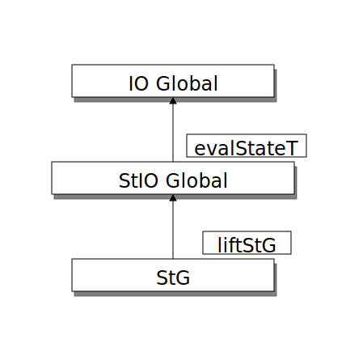

Code
In this Section, we want to examine how the functional core, outer shell design pattern was implemented for the hover feature with the following three steps:
- Impure Input
-
Compile Frege source code, extract and save the compiler global.
- Pure Core
-
Extract the hover information (type signature) from the extracted compiler global and transform it to the LSP hover type.
- Impure Output
-
Send the hover lsp data type back to the text editor using the LSP4J library.
|
The functional core, outer shell design pattern generalises well: The code for the impure input is already implemented while the code skeleton for the impure output is given by the LSP4J library. As a result, only the pure core part needs a lot of effort to implement for new language features. |
Impure Input
The compile component is responsible for creating an in-memory model of all available compiler information. It uses a Java uriGlobals HashMap<URI, Global> data structure to keep track of all openend Frege files in the text editor and its compiler information.
The Uniform Resource Identifier (URI) for each Frege file is defined by the language server protocol (LSP), while the Global data type is defined by the Frege compiler. It stores all compiler information for the associated Frege file URI and is documented here.
Figure 1 shows the sequence diagram for the compile component.
URI with the initialised projectGlobal and saves all returned newGlobals in the uriGlobals hashmap.The Compile component is layered according to the Write Core Logic in Frege, Use Java for LSP principle and shown in Figure 2.
![Compile layers: The `CompileService.java` class calls the `CompileExecutorLSP.fr` module, which calls the `CompileMakeMode.fr` module. The `CompileMakeMode.fr` is the core part, which calls the Frege compiler to compile the Frege file with the given project global. The returned list of globals is of type `IO` and thus impure. This `IO [Global]` list is then first converted by the `CompileMakeMode.fr` to `IOMutalbe (ArrayList Global)` and finally to the Java native type `List<TGlobal>` As a final step the `uriGlobals` hashmap is upated with the new globals.](_images/diag-263f9bc9d702a67ad053dc2b721ff6e4559b3b0b.svg)
CompileService.java class calls the CompileExecutorLSP.fr module, which calls the CompileMakeMode.fr module. The CompileMakeMode.fr is the core part, which calls the Frege compiler to compile the Frege file with the given project global. The returned list of globals is of type IO and thus impure. This IO [Global] list is then first converted by the CompileMakeMode.fr to IOMutalbe (ArrayList Global) and finally to the Java native type List<TGlobal> As a final step the uriGlobals hashmap is upated with the new globals.The impure compileMake :: String → Global → IO [Global] is the core function. It uses a slight variation of the Frege compiler’s make mode, which automatically compiles all dependent modules first. It differs only in the return type by always returning a list of globals. For this to work, the Frege compiler needs to know the common Frege main source directory, which is configured through the project global and retrieved by the Project component. This builds the basis to make the Frege IDE workspace/project-aware and satisfy the usability quality attribute.
|
The three
Global monads in the Frege compiler

Figure 3. The three
Global monads in the Frege comiler. The StG is pure, while the StIO Global and IO Global are impure, beautifully showing the separation of concerns. We can switch from the StG to the StIO Global monad with the liftStG function and from StIO Global to IO Global with the evalStateT function. There also exist the two convenient get global state functions getST for StG and getSTT for StIO Global. |
Pure Hover Core
Figure 4 shows the sequence diagram for the hover component.
The Hover component is layered according to the Write Core Logic in Frege, Use Java for LSP principle and shown in Figure 5.
![Hover layers: The `HoverService.java` class creates the Frege `PositionLSP` type and calls the `HoverLSP.fr` module. The `HoverLSP.fr` module converts the `PositionLSP` type to the core `Position` type to make the core logic data types independent of the LSP types. It then calls the `Hover.fr` module to compute the type signature, which is returned as `Maybe Hover` signaling that there may be no available type for the requested hover expression. As a final step the core data type `Maybe Hover` is transformed back to the `Maybe HoverLSP` type and returned to the `HoverService.java` class. The whole interaction is pure because there is no `IO` involved.](_images/diag-1bae654cf125b53c2da0566e73ac67a6f89c1a62.svg)
HoverService.java class creates the Frege PositionLSP type and calls the HoverLSP.fr module. The HoverLSP.fr module converts the PositionLSP type to the core Position type to make the core logic data types independent of the LSP types. It then calls the Hover.fr module to compute the type signature, which is returned as Maybe Hover signaling that there may be no available type for the requested hover expression. As a final step the core data type Maybe Hover is transformed back to the Maybe HoverLSP type and returned to the HoverService.java class. The whole interaction is pure because there is no IO involved.The getTypeOnHover function is responsible for the main work and shown in Listing 1.
getTypeOnHover FunctiongetTypeOnHover :: Position -> StateT Global Maybe Hover (1)
getTypeOnHover pos = do
global <- StateT.get
token <- findToken pos (2)
qname <- tokenToQName token (2)
symbol <- findSymbol qname (2)
symbolType <- getSymbolType symbol (2)
pure $ Hover (3)
{
range = tokenToRange token,
content = FregeCodeBlock symbolType
}| 1 | The function uses the monad transformer concept to combine the State Global and the Maybe Hover monad. |
| 2 | The main logicWe find the needed type in the big Global record by moving from token → qualifiedName → symbol → symbolType. |
| 3 | As a last step, we transform the result to our core data type Hover. |
Since the core is pure and since we developed it with a Test-Driven Development approach it is testable as shown Listing 2.
shouldShowLocalVaridTypeSignature :: Property
shouldShowLocalVaridTypeSignature = once $ morallyDubiousIOProperty do (1)
fregeHoverCode = "module HoverTest where\n\n"
++ "simplyString = \"Hello\""
global <- standardCompileGlobal
compiledGlobal <- compile fregeHoverCode global
expected = Just Hover
{
range = Range { start = Position 3 1, end = Position 3 13 },
content = FregeCodeBlock "simplyString :: String"
}
actual = getTypeSignatureOnHover (Position 3 3) compiledGlobal
pure $ expected == actual| 1 | The acute reader might notice the morallyDubiousIOProperty and think that the test is not pure. You are right: For the test setup we need to compile the code first, which is as illustrated the impure first step. Since a pure function cannot call an impure function in Frege, we need to execute the whole test in the impure IO context. The getTypeOnHover function, however, remains pure. |
Impure Output
This last step is delegated to the LSP4J library. As a result, we just follow the guidelines and implement the hover binding as shown in Constraints.